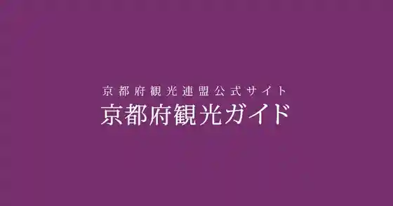
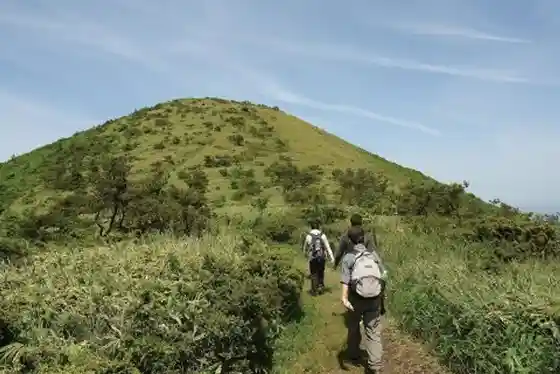
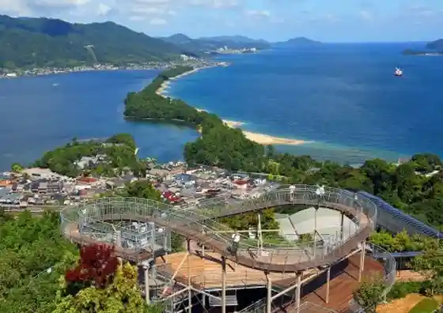

Miyazu Baths Rayura Onsen
Miyazu, Kyoto · 03-6627-4666
Chie Kurabe
Miyazu, Kyoto · 0772-22-4554

Shiei Amanohashidate Chushajo
Miyazu, Kyoto · 0772-22-4179

Oeyama
Miyazu, Kyoto · 0773-62-2506

Amanohashidate Byu Land
Miyazu, Kyoto · 0772-22-5304

Amanohashidate Tourism Association
Miyazu, Kyoto · 0772-22-8030
Motoise Kago Shrine
Miyazu, Kyoto · 0772-27-0006
Miyazu Machinaka Chiiki Shinko Kyoten Shisetsu
Miyazu, Kyoto · 0772-25-1382
Roadside Station Umi no Kyoto Miyazu
Miyazu, Kyoto
Chie Baths (Amanohashidate Onsen Sotoyu Shisetsu)
Miyazu, Kyoto · 0772-22-1515
Chie no Mochi
Miyazu, Kyoto
Kin Hiki Falls
Miyazu, Kyoto · 0772-22-8030
Amanohashidate
Miyazu, Kyoto · 0772-22-8030
Tango Yura Beach
Miyazu, Kyoto · 0772-22-8030
Miyazu Rekishi no Kan
Miyazu, Kyoto · 0772-20-3390
Nariai Tera
Miyazu, Kyoto · 0772-27-0018
Miyazu Onsen Pinto Yu
Miyazu, Kyoto · 0772-22-8030
Umi no Kyoto Amanohashidate, Ine Furiipasu 2days
Miyazu, Kyoto · 0772-42-0323
Iso Shimizu
Miyazu, Kyoto
Merukyuru Kyoto Miyazu Resort & Supa (Kyu : Hotel & Rizotsu Kyoto Miyazu)
Miyazu, Kyoto · 0120-993-130
Kasamatsu Park
Miyazu, Kyoto · 0772-27-0032
Kyotofuritsu Seishonen Kaiyo Center (Mariinpia)
Miyazu, Kyoto · 0772-22-0501
Miyazu Amanohashidate Ryoshi Town Totomato
Miyazu, Kyoto · 0772-25-9006
Yu Rayura Onsen Sato
Miyazu, Kyoto · 0772-22-8030
Chion Tera
Miyazu, Kyoto · 0772-22-2553
Matsu Gin
Miyazu, Kyoto · 0772-22-3285
Chirimen Tonya
Miyazu, Kyoto · 0772-25-1594
Amanohashidate Onsen
Miyazu, Kyoto · 0772-22-8030
Hashidate Kanko Biru Maunteiinmausu
Miyazu, Kyoto · 0772-22-3668
Hashidate Daimaru Main Shop
Miyazu, Kyoto · 0772-22-4151
Amanohashidate Beach
Miyazu, Kyoto · 0772-22-8030
Amanohashidate Fuchu Beach
Miyazu, Kyoto · 0772-22-8030
Hashidate Chaya
Miyazu, Kyoto · 0772-22-3363
Kasamatsu Village
Miyazu, Kyoto · 0772-27-1605
Teichiami Experience
Miyazu, Kyoto · 0772-28-9480
Kensho Tera
Miyazu, Kyoto · 0772-22-4020
Katorikku Tango Kyokai Miyazu Seido
Miyazu, Kyoto · 0772-22-3127
Amanohashidate Akuteibitei Center
Miyazu, Kyoto · 090-9047-5896
Tai Miyazu Yottohaba
Miyazu, Kyoto · 0772-22-6776
Hotel Kitano Ya
Miyazu, Kyoto · 0772-22-4126
Monju So
Miyazu, Kyoto · 0772-22-7111
Cha Roku Bekkan
Miyazu, Kyoto · 0772-22-2177
Wain to Yado Chitose
Miyazu, Kyoto · 0772-22-3268
Oberuju Amanohashidate
Miyazu, Kyoto · 0772-22-0650
Hashimoto Ya
Miyazu, Kyoto · 0772-22-5409
Kyotofuritsu Tango Umi to Hoshi no Mie Ru Oka Park
Miyazu, Kyoto · 0772-28-9111
Maruyasu
Miyazu, Kyoto · 0772-22-2310
Amanohashidate Hotel
Miyazu, Kyoto · 0772-22-4111
Amanohashidate Wain
Miyazu, Kyoto · 0772-27-2222
Miyazu Odori
Miyazu, Kyoto
Kyotofuritsu Tango Local History Museum / Kyu Nagashima Ie House / Tango Kokubunji Ato (Kyukanchu)
Miyazu, Kyoto · 0772-27-0230
Tango Amanohashidate Ine Furii
Miyazu, Kyoto · 0772-42-0323
Hakurei Shuzo
Miyazu, Kyoto · 0772-26-0001
Nariai Kannon Onsen
Miyazu, Kyoto · 0772-27-0005
Jibiki Ki Amiryo Experience
Miyazu, Kyoto · 0772-27-0190
Monju So Shoro Tei
Miyazu, Kyoto · 0772-22-2151
Miyazu Amanohashidate Yusuhosuteru
Miyazu, Kyoto · 0772-27-0121
(Inori) (Garasha Fujin) Zo
Miyazu, Kyoto · 0772-45-1625
Akiko no Heya
Miyazu, Kyoto · 0772-22-2101
O Yado Tsui Hashi Ro
Miyazu, Kyoto · 0772-22-2101
Kyu Mikami Ie House
Miyazu, Kyoto · 0772-22-7529
Shiei Miyazu Ekimae Chushajo
Miyazu, Kyoto